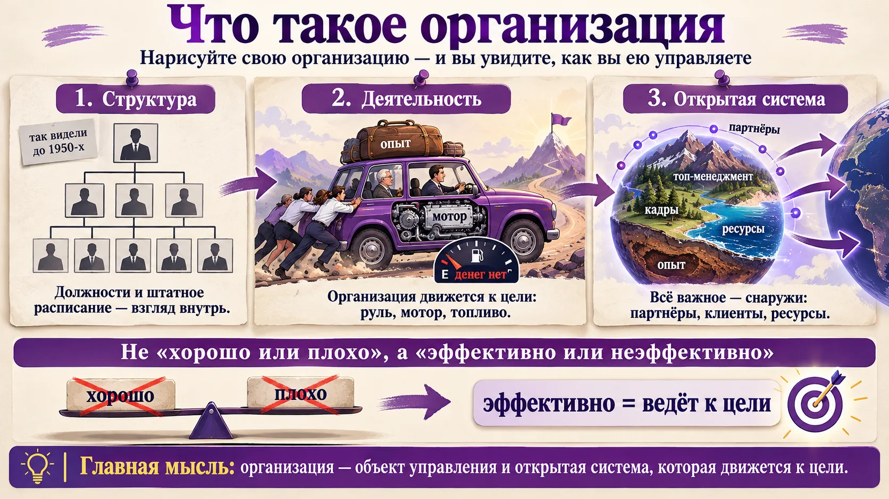
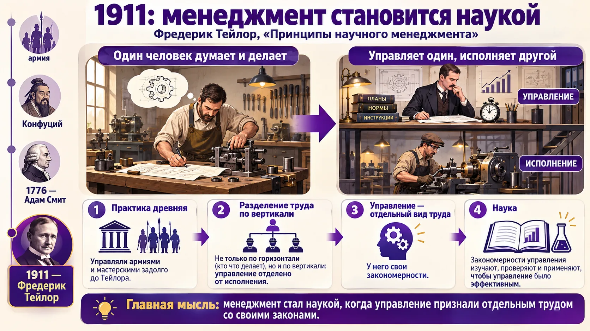
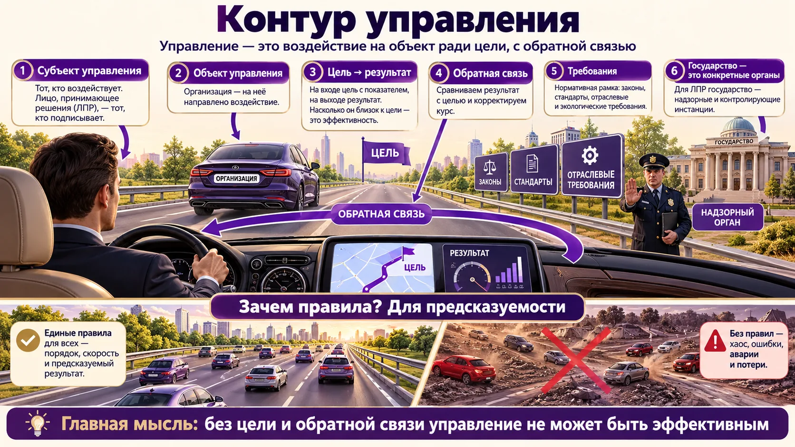
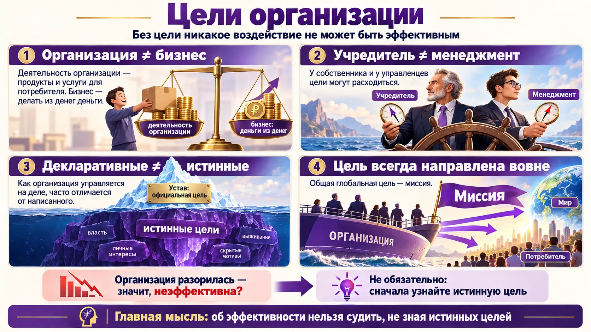
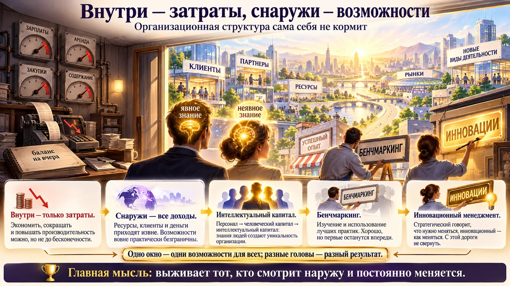
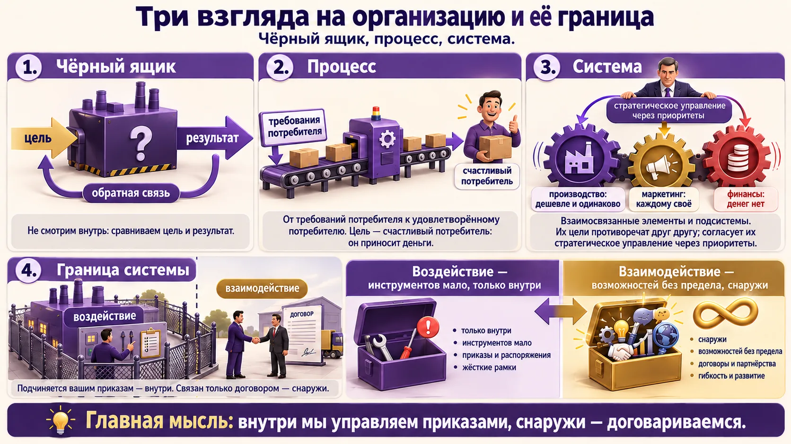
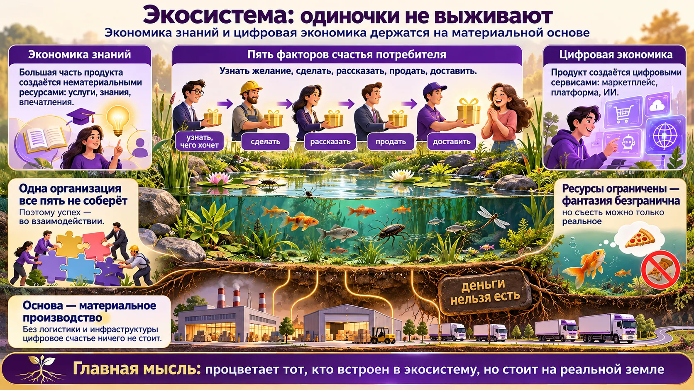
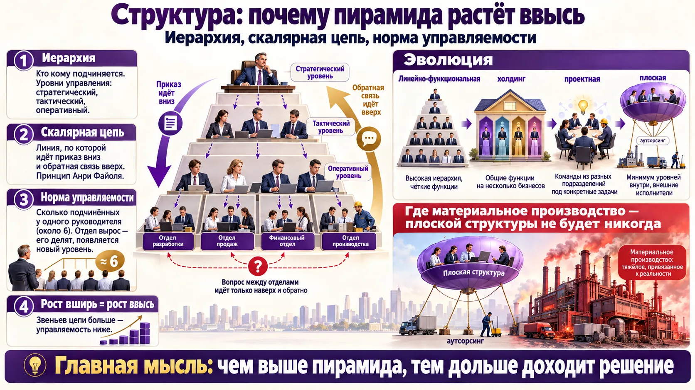
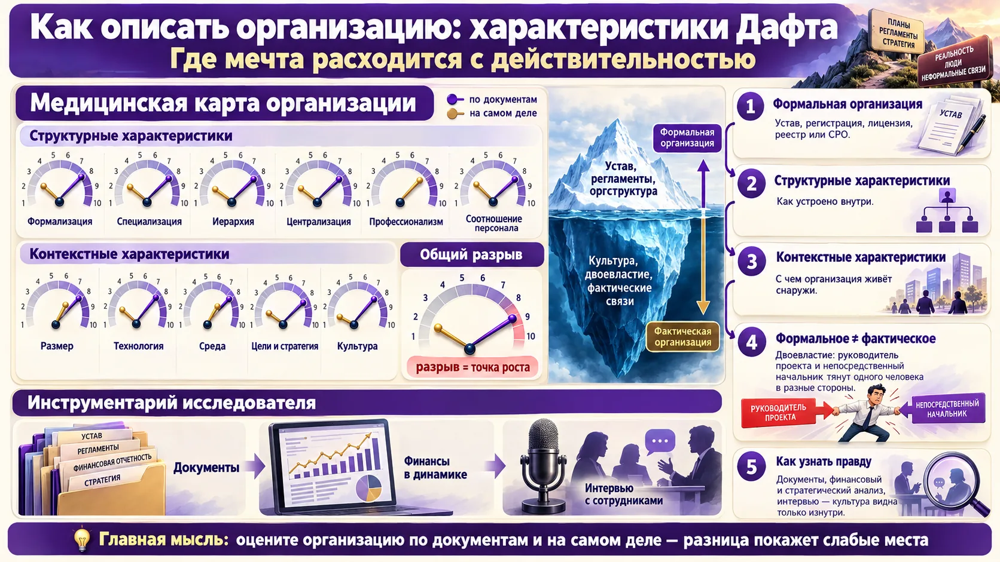
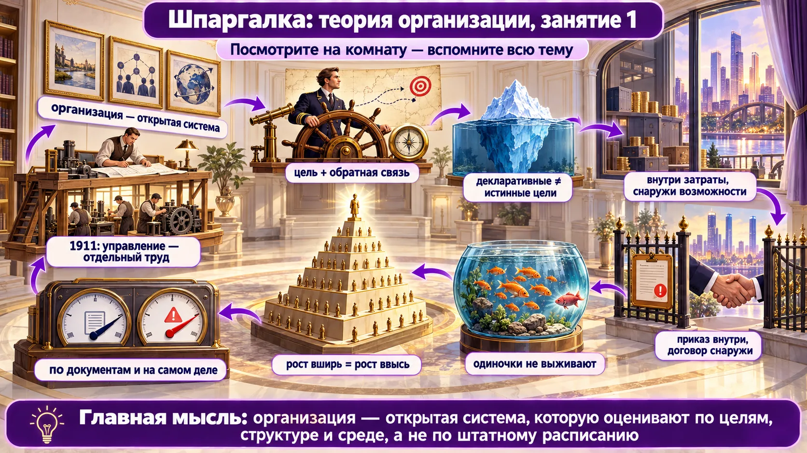

Нарисуйте организацию
Занятие началось с упражнения: каждый молча рисует свою организацию так, как её видит. Рисунок честно показывает, как человек думает об управлении. Ниже — что нарисовала группа и что из этого следует.
✏️ Сначала нарисуйте сами. Прежде чем читать дальше, возьмите чистый лист и за 5 минут нарисуйте свою организацию так, как вы её видите: чтобы по рисунку было понятно, что вы под ней понимаете. Не подглядывайте в варианты группы ниже — ценен именно ваш образ. Потом сравните: что есть у вас и чего нет у других, где у вас цель, клиенты, партнёры, деньги.
Оргструктура 🗂
Большинство нарисовали должности и штатное расписание: «должен быть порядок». Это взгляд внутрь. Так понимали управление примерно до 1950-х.
Автомобиль 🚗
За рулём руководитель, сзади учредитель, мотор, багаж опыта, персонал толкает, бак — «денег нет». Здесь уже не структура, а деятельность: организация движется к цели.
Планета 🌍
Кадры — материк, топ-менеджмент — горы, ресурсы — вода, опыт — недра, партнёры — атмосфера, «без которой не прожить». Организация существует в среде.
Стрелки наружу ↗
Рисунок открытой системы со связями вовне. Преподаватель: «В этом заложен высший смысл». Главное в организации — её внешние связи.
Повторите упражнение со своей командой
- Попросите руководителей подразделений за пять минут нарисовать организацию, не советуясь. Если все нарисуют пирамиду, команда смотрит внутрь. Если появятся клиенты, партнёры и дорога, она видит среду.
- Спросите у каждого рисунка: где цель? Откуда топливо (деньги)? Кто за рулём, а кто толкает? Разница в ответах покажет, насколько по-разному люди понимают общее дело.
- Замените в обсуждениях «это плохое решение» на вопрос «к какой цели это нас приближает?».

1911: менеджмент становится наукой
Управляли всегда: армиями, мастерскими, государствами. Наукой управление стало, когда его признали отдельным видом труда.
Что нового сказал Тейлор
- 1911 год, Фредерик Тейлор, «Принципы научного менеджмента» — дата рождения науки управления.
- Разделение труда бывает не только по горизонтали (кто что делает), но и по вертикали: управление и исполнение.
- Труд управленца отделён от труда исполнителя. Управление — отдельный вид деятельности со своими закономерностями.
- Эти закономерности нужно изучать, наблюдать и применять, чтобы сделать управление эффективным.
Сначала практика, потом наука
Практика первична: сначала опыт, потом обобщение и выводы. Крупные организации и разделение труда были и в 1776 году, ко времени Адама Смита, управление армией — ещё раньше, а об истоках можно говорить со времён Конфуция. Но наукой менеджмент стал только тогда, когда управление выделили в предмет изучения.
1776 или 1911?
1776 — «Богатство народов» Адама Смита, это экономическая наука и разделение труда. 1911 — Тейлор и научный менеджмент. На вопрос «когда менеджмент стал наукой» ответ — 1911.
Фредерик Тейлор (1856–1915) — научный менеджмент
Американский инженер. Начинал рабочим на сталелитейном заводе и дошёл до главного инженера. Хронометрировал операции, искал «единственно лучший способ» выполнить каждую и платил за выработку. Главные идеи: научный подбор и обучение рабочих, стандартизация операций, разделение ответственности между администрацией (планирует) и рабочими (исполняют). Критика: человек сводится к «винтику», не учитываются мотивация и группа.
F. W. Taylor, «The Principles of Scientific Management», 1911 — Project Gutenberg.
Анри Файоль (1841–1925) — административная школа
Французский горный инженер, 30 лет руководил горнодобывающей компанией. Если Тейлор смотрел на цех снизу, то Файоль — на организацию сверху. Выделил функции управления (предвидение, организация, распорядительство, координация, контроль) и 14 принципов управления: разделение труда, власть и ответственность, единоначалие, скалярная цепь, централизация и другие. Принцип скалярной цепи прозвучал на занятии (раздел 8).
H. Fayol, «Administration industrielle et générale», 1916.
Макс Вебер (1864–1920) — идеальная бюрократия
Немецкий социолог. Описал «идеальный тип» рациональной бюрократии: чёткая иерархия, письменные правила, специализация, назначение по квалификации, обезличенность. Для Вебера бюрократия — самая рациональная форма управления, а не ругательство. Её минусы — медлительность и негибкость. Их преподаватель описывает как «красиво, но долго» (раздел 8).
M. Weber, «Wirtschaft und Gesellschaft», 1922 (посмертно).
Элтон Мэйо — школа человеческих отношений
Хоторнские эксперименты (1924–1932) на заводе Western Electric показали: производительность зависит не только от освещения и оплаты, но и от внимания, группы и неформальных норм. Отсюда идея неформальной организации: фактические отношения отличаются от формальных. Это прямой предшественник раздела 9 «формальное и фактическое».
Вертикальное разделение труда в вашей работе
- Посчитайте, какую часть недели вы управляете (ставите цели, распределяете ресурсы, контролируете), а какую — исполняете сами. Если исполнение вытесняет управление, управленческий труд не выполняет никто.
- Тейлоровский ход до сих пор работает: опишите повторяющуюся операцию, найдите лучший способ, сделайте его стандартом и обучите людей.

Открытая система и контур управления
Ричард Дафт: представление об организации как об открытой системе значило для менеджмента столько же, сколько изобретение электричества для промышленности.
Шесть элементов контура управления
Закономерности управления одинаковы в технических системах, в живых организмах и в социально-экономических системах, к которым относится организация. Цель достигнута на 20% — хорошо это или плохо? Зависит от того, чего хотели. «Отрицательный рост — тоже рост».
Кто для директора «государство»
Государство само по себе не субъект, с «государством вообще» ЛПР не взаимодействует. Для него государство — это конкретные надзорные и контролирующие органы: они задают рамку и следят за её соблюдением. В метафоре автомобиля государство строит дорогу, ровную или в ямах, и этим помогает движению или мешает ему.
Зачем нужны правила
Ехать можно и без правил: мотор завели и поехали. Безопасным движение делает предсказуемость: общие правила нужны, потому что нас много. «Хуже всего для директора — когда правила всё время меняются». Нормативная рамка задаёт предсказуемость. Принятие решений — ежедневный труд менеджера.
«ГОСТ имеет силу закона» — это упрощение
По закону № 162-ФЗ «О стандартизации в Российской Федерации» национальные стандарты (ГОСТ Р) применяются добровольно. Обязательными они становятся, только если на них ссылаются технический регламент, закон или договор. Обязательные требования к продукции устанавливают технические регламенты.
Федеральный закон от 29.06.2015 № 162-ФЗ, ст. 26 — текст на kremlin.ru.
«Разрешено всё, что не запрещено» — для коммерческих организаций
Преподаватель сослалась на Гражданский кодекс. Точнее так: по ст. 49 ГК РФ коммерческие организации обладают общей правоспособностью и могут вести любую не запрещённую законом деятельность. У некоммерческих и унитарных организаций правоспособность специальная: только то, что предусмотрено уставом. Отдельные виды деятельности требуют лицензии (раздел 9).
ГК РФ, ст. 49 — КонсультантПлюс.
Людвиг фон Берталанфи и общая теория систем
Австрийский биолог (1901–1972). Заметил, что живые организмы, машины и общества подчиняются общим системным закономерностям, и предложил «общую теорию систем». Закрытая система не обменивается со средой ничем и постепенно «выдыхается». Открытая получает из среды ресурсы, энергию и информацию и отдаёт обратно результат, а потому может расти и развиваться. Отсюда тезис занятия «закономерности управления везде одинаковы».
L. von Bertalanffy, «General System Theory», 1968.
Норберт Винер и кибернетика — откуда «обратная связь»
Американский математик (1894–1964) назвал «кибернетикой» науку об управлении и связи в машинах и живых организмах. Ключевая идея — обратная связь: система сравнивает результат с целью и корректирует себя, как термостат или рулевой. Само слово «кибернетика» происходит от греческого «искусство кормчего».
N. Wiener, «Cybernetics: Or Control and Communication in the Animal and the Machine», 1948.
Катц и Кан: организация как открытая система
Психологи Дэниел Катц и Роберт Кан перенесли системный подход на организации. Организация — цикл: вход (ресурсы из среды) → преобразование → выход (продукты и услуги в среду) → новые ресурсы. Если среда перестаёт «покупать» выход, цикл рвётся. Именно на эту модель опирается Дафт.
D. Katz, R. Kahn, «The Social Psychology of Organizations», 1966.
Проверьте контур на своём проекте
- Есть ли у цели показатель? «Улучшить сервис» — не цель. «Время ответа клиенту — не больше 2 часов» — цель.
- Где обратная связь: кто, как часто и по каким данным сравнивает результат с целью? Нет обратной связи — нет управления, есть только надежда.
- Выпишите конкретные органы, которые задают рамку вашей деятельности: какие проверки и отчёты, какие сроки. Это «дорога», по которой вы едете. Её неровности закладывайте в план.

Цели организации
«Надо знать, куда едешь». Никакое воздействие не может быть эффективным, если нет цели. Но у одной организации целей несколько, и они не совпадают.
| Пара целей | В чём разница |
|---|---|
| Организации ≠ бизнеса | Деятельность организации — продукты и услуги, удовлетворение потребителей. Бизнес — «делать из денег деньги». Деятельность, подчинённая только целям бизнеса, не обязательно эффективна: иногда выгоднее изъять деньги с рынка, чем продолжать работу. |
| Учредителя ≠ менеджмента | Собственник и наёмные управленцы могут хотеть разного. |
| Декларативные (официальные) ≠ истинные | То, как организация управляется на деле, часто сильно отличается от написанного в уставе и стратегии. |
Можно ли судить об эффективности со стороны
Деятельность организации не соответствует ожиданиям общества. Значит ли это, что она неэффективна? Нет: «может, у ребят всё в порядке». Без знания истинных целей нельзя судить об эффективности. Организация разорилась — «может, так и было надо». Слушатели добавили: «Деньги все уже в другом месте». Отдельно преподаватель предупредила о подмене понятий вроде «отрицательного роста»: такие термины формируют позитивное восприятие реальности и мешают трезво оценивать цели.
Официальные и операционные цели — Перроу и Дафт
Социолог Чарльз Перроу (1961) ввёл различие: официальные цели — то, что организация говорит о себе (устав, миссия, отчёты); операционные цели — то, к чему реально направлены ресурсы и решения. Дафт использует это различие в главе о целях: миссия задаёт смысл, а операционные цели (по прибыли, рынку, людям, производительности, инновациям) показывают, чем организация занята на самом деле. Это та же пара, что на занятии: «декларативные и истинные».
C. Perrow, «The Analysis of Goals in Complex Organizations», American Sociological Review, 1961, 26(6).
Истинные цели видны по деньгам и времени
- Выпишите официальные цели из устава или стратегии. Рядом — куда фактически ушли бюджет и время руководства за последний год. Расхождение и есть ваши истинные цели.
- Если у собственника и у директора разные цели, договоритесь о них явно и закрепите в KPI. Иначе организацию будут тянуть в разные стороны.
- Проверьте, направлена ли цель вовне. «Сократить затраты на 10%» — внутренняя цель. «Удержать клиентов при цене на 10% ниже конкурентов» — внешняя.

Внутри — затраты, снаружи — возможности
Организационная структура «сама себя не кормит». Все доходы, клиенты и ресурсы — снаружи. Внутри неисчерпаемы только знания людей.
Почему внутри — только затраты
- Любая деятельность связана с затратами: налоговая скажет, что затраты подтверждают сам факт деятельности.
- Производительность нельзя повышать до бесконечности, персонал нельзя сократить до нуля, затраты тоже нельзя снизить до нуля.
- Бухгалтерский учёт описывает то, что внутри: «баланс на вчерашний день, а у вчера нет будущего».
- Чтобы автомобиль ехал, нужно топливо, а оно снаружи: партнёры, клиенты, ресурсы.
Почему возможности снаружи безграничны
Стрелки наружу означают поиск возможностей: новые доходы, новые виды деятельности. Они меняют организацию, а только постоянно изменяясь, организация выживает. Взаимодействует она не в одиночку, а с множеством других организаций — это называют экосистемой (раздел 7).
Бенчмаркинг
В технике — эталонное тестирование, в менеджменте — изучение и использование лучших практик. Можно сделать, как у лидеров, и получится хорошо. Но первыми были они, и если не разучатся, завтра сделают новое и снова будут впереди.
Инновационный менеджмент — высший пилотаж
Уровни: общий → функциональный → стратегический → инновационный. Стратегический менеджмент говорит, что нужно меняться, инновационный — как меняться. Если строите капитал на инновациях, с этой дороги не свернуть, и это очень затратно.
Что мы узнали об организации — 7 выводов первой части
- Организация — объект управления.
- Организация — система, причём открытая.
- Внутри — только затраты, все возможности — вовне.
- У организации обязательно есть цель, она направлена вовне; глобальная цель — миссия.
- Знания людей (организационные компетенции) — основной капитал. Экономика знаний: новая ценность создаётся новым знанием.
- Акцент — на внешних коммуникациях и взаимодействии с другими организациями.
- Взаимодействие всё глубже уходит в цифровую среду: электронный документооборот, банкинг и т. д.
Явное и неявное знание: Полани, Нонака и Такеучи
Философ Майкл Полани (1966): «Мы знаем больше, чем можем сказать». Неявное знание — навык, чутьё, опыт, которые трудно записать. Явное — то, что изложено в документах и инструкциях. Икудзиро Нонака и Хиротака Такеучи в книге «Компания — создатель знания» (1995) показали, как японские фирмы превращают одно в другое по спирали SECI: обобществление → экстернализация (запись) → комбинация → интернализация (освоение). Инновации рождаются на этих переходах. Поэтому уход опытного сотрудника — потеря капитала, которого нет в балансе.
M. Polanyi, «The Tacit Dimension», 1966; I. Nonaka, H. Takeuchi, «The Knowledge-Creating Company», Oxford University Press, 1995.
Как руководителю работать с «окном» и «головами»
- Баланс снаружи и внутри. Посмотрите повестку последних пяти совещаний: сколько вопросов о затратах и регламентах, а сколько о клиентах, партнёрах и новых возможностях?
- Сохраняйте неявное знание. Наставничество, разбор кейсов, пары «опытный + новый», записи «как я это делаю» — до того, как ключевой человек уйдёт.
- Бенчмаркинг — с открытыми глазами. Копируйте лучшее, но заранее решите, где вы будете первыми, а не вторыми.

Три модели организации и её граница
Организация — сложная система, которая существует в меняющейся среде и постоянно эволюционирует. Её можно рассматривать тремя стандартными способами.
1. Чёрный ящик ⬛
Система с обратной связью. Не смотрим, что внутри (хотя там субъект и объект управления), сравниваем цель и результат.
2. Процесс ➡️
Подход систем менеджмента качества: требования → процесс → результат, обратная связь, оценка потраченных ресурсов. Процесс раскладывается на шаги — процессная модель. В начале — требования потребителя, в конце — сам потребитель.
3. Система ⚙️
Взаимосвязанные и взаимодействующие элементы. Элемент со своей целью — подсистема: производство, финансы, маркетинг, персонал. Управление подсистемой — функциональный менеджмент.
Цели подсистем противоречат друг другу (деловая игра)
| Подсистема | Чего хочет |
|---|---|
| Производство | Непрерывности и однородности: делать одно и то же, тогда затраты ниже. Деньги на обновление оборудования и сырьё. |
| Маркетинг | Индивидуального подхода: клиенты разные. Деньги на рекламу. |
| Финансы | «Делайте что хотите, денег нет». |
Согласует их стратегическое управление: прежде всего оно определяет приоритеты и общую стратегическую цель. Если сегодня в приоритете одни цели, другие подсистемы страдают, и это увязывают в общих решениях.
Партнёр, без которого вы не можете работать, — внутри или снаружи?
Снаружи. Критерий границы — не степень зависимости и не частота контактов, а подчинение внутренним распоряжениям. Партнёра связывает с вами договор. Филиал в другом городе, наоборот, внутри: он подчиняется вашим приказам.
Процессный подход в ISO 9001
Модель «процесса» с занятия — основа международного стандарта систем менеджмента качества ISO 9001 (в России — ГОСТ Р ИСО 9001-2015). Организация описывается как сеть взаимосвязанных процессов с входами и выходами. Цикл «планируй — делай — проверяй — действуй» (PDCA) играет роль обратной связи, а в центре стоят требования и удовлетворённость потребителя. Так «счастливый потребитель» из лекции становится измеряемым требованием стандарта.
Воздействие или взаимодействие — разные инструменты
- Составьте список ключевых участников вашей работы и разделите их линией: кому вы можете дать распоряжение, а с кем только договориться. За линией приказы не работают, там нужны договор, интерес, репутация, совместная выгода.
- Конфликт подсистем не лечится уговорами. Нужен явный приоритет на период: «в этом квартале — удержание клиентов, даже ценой роста затрат».
- Нарисуйте свой ключевой процесс от требования клиента до его «улыбки». Каждый шаг, который клиент не замечает и не ценит, — кандидат на сокращение.

Экономика знаний, цифровая экономика, экосистема
Первый шаг к современному управлению — открытая система. Второй — экономика знаний. Третий — цифровые платформы, которые дают почти бесконечный масштаб взаимодействия.
| Понятие | Суть по лекции |
|---|---|
| Экономика знаний | Большая часть валового продукта создаётся нематериальными ресурсами. |
| Экономика услуг | Потребность удовлетворяется не продуктами, а услугами: финансовыми, информационными, образовательными. Еда у всех одинаковая, а счастье можно создать бесконечным числом способов: «материальные ресурсы ограничены, фантазия безгранична». |
| Экономика впечатлений | Доход прирастает там, где клиент счастлив и впечатлён. |
| Цифровая экономика | Продукт создаётся за счёт цифровых сервисов (маркетплейс, платформа). ИИ и платформы снимают ограничение «глаз и рук» и дают масштаб взаимодействия. |
Пять факторов счастья потребителя
Делает один, рассказывает другой, доставляет третий, а потребность часто формируют рекомендательные алгоритмы. Внутри одной организации все пять факторов не собрать, поэтому успех — в налаженном взаимодействии. Отсюда вывод: одиночки не выживают.
Экосистема — это пруд
Понятие пришло из экологии. В пруду жучки, рыбки, растения; все едят друг друга и за счёт этого живут. Выживает тот, кому хватает ресурса и кто востребован. Цифровые экосистемы очень подвижны: сервисы и организации появляются и исчезают. Пример скорости: голуби → телеграф → проводной телефон → пейджер → кнопочный телефон → смартфон. Пик инноваций смещается: электроника → мобильная связь → цифровые сервисы → сейчас сельское хозяйство.
Основа — материальное производство
«Выдерните ИИ из розетки — он перестанет думать». «Деньги нельзя есть». В цифровой среде можно выбрать и купить, но не съесть: нужны логистика, физическое распределение, инфраструктура. Без них цифровое счастье «ничего не стоит».
Нормативные суждения — оценки, а не теория
- «Основа любой экономики — материальное производство. Богатой будет та страна, где развивается материальное производство».
- Сейчас идёт редукция возможностей взаимодействия: вместо глобальной экономики — импортозамещение, доступ к ресурсам сократился. «В закрытой системе эффективности не добиться», поэтому цель — благополучие и устойчивость в ограниченных возможностях. Общие закономерности объективны: основа процветания — взаимодействие, «просто круг общения ограничен».
«Экономика впечатлений» и пятая сила Портера
- Термин «экономика впечатлений» ввели Джозеф Пайн и Джеймс Гилмор. Ценность растёт по ступеням: сырьё → товар → услуга → впечатление. Чашка кофе стоит центы как зёрна и несколько долларов в кофейне, где за неё платят как за опыт.
- На занятии модель Майкла Портера упомянули для внешней среды (раздел 9) и назвали четыре силы: поставщики, покупатели, конкуренция в отрасли, товары-заменители. Пятая — угроза появления новых участников. В тестах проверяют все пять.
B. J. Pine, J. H. Gilmore, «Welcome to the Experience Economy», Harvard Business Review, 1998; M. Porter, «How Competitive Forces Shape Strategy», Harvard Business Review, 1979 — HBR.
Проверьте свою цепочку из пяти рук
- Для своего главного продукта ответьте: кто узнаёт желание клиента, кто делает, кто рассказывает, кто продаёт, кто доставляет? Сколько из пяти рук — ваши, а сколько чужие?
- Самое слабое звено цепочки ограничивает весь результат. Чаще всего это «рассказать» или «доставить», и закрывают их партнёры, а не внутренний отдел.
- Цифровой сервис без физической основы — витрина без склада. Планируя цифровизацию, сразу считайте логистику и инфраструктуру.

Структура: иерархия, скалярная цепь, норма управляемости
Все рисовали структуру, и не зря: она есть у каждой организации. Почему пирамида растёт ввысь и когда она может стать плоской.
Попробуйте в тренажёре. (1) «Завод»: 3000 исполнителей при норме 6 — сколько уровней и сколько звеньев проходит вопрос «через верх»? (2) Увеличьте норму до 12: пирамида ниже, но посмотрите, сколько связей у руководителя. (3) Включите «аутсорсинг производства»: структура стала плоской, но с подрядчиком вас связывает договор, а не приказ.
Эволюция структур: от пирамиды к плоской
Плоская структура возможна только без материальной основы. «Там, где материальное производство, плоской структуры не будет никогда»: технологические процессы требуют горизонтального разделения труда, а значит иерархии. Плоская компания существует, пока производство где-то в другом месте, и там стоит традиционная пирамида. Пример с занятия: джинсы придумали здесь, а шьют в Индии.
Рост организации делает пирамиду не только шире
При фиксированной норме управляемости рост числа исполнителей добавляет уровни управления. Значит, растёт длина скалярной цепи и падает управляемость. Варианты «управляемость растёт» или «число уровней не меняется» — неверны.
Формула Грайкунаса — та самая «формула нормы управляемости»
На занятии прозвучало, что «есть формула». Её предложил консультант В. А. Грайкунас (1933). Руководитель с n подчинёнными управляет не n связями, а прямыми, групповыми и перекрёстными:
При 4 подчинённых связей 44, при 6 — 222, при 8 — 1080, при 12 — 24 708. Поэтому классики называли норму около 5–7, а широкая норма возможна там, где работа стандартизована и формализована.
V. A. Graicunas, «Relationship in Organization», 1933; перепечатано в L. Gulick, L. Urwick (eds.), «Papers on the Science of Administration», 1937.
Ford и General Motors: стратегия определяет структуру
Преподаватель привела классику: противостояние Ford и General Motors показало, что рассредоточение власти — успех. В 1920-е Генри Форд управлял централизованно и выпускал одну модель — «Ford T». Альфред Слоун построил в GM дивизиональную структуру: автономные отделения (Chevrolet, Buick, Cadillac…) под разные сегменты рынка и общий центр, который контролирует финансы и стратегию. К концу 1920-х GM обогнала Ford. Историк Альфред Чандлер описал это в книге «Стратегия и структура» (1962): структура следует за стратегией.
A. Chandler, «Strategy and Structure», MIT Press, 1962; A. P. Sloan, «My Years with General Motors», 1964.
Генри Минцберг — пять конфигураций организации
Канадский исследователь менеджмента. Выделил пять типовых конфигураций: простая структура (всё решает владелец), машинная бюрократия (завод, стандартизация операций), профессиональная бюрократия (больница, университет, власть у профессионалов), дивизиональная форма (холдинг) и адхократия (проектные команды, инновации). На занятии путь «пирамида → холдинг → проектная → плоская» — это движение от машинной бюрократии к адхократии.
H. Mintzberg, «The Structuring of Organizations», 1979.
Аутсорсинг и аутстаффинг
Аутсорсинг — передача функции (уборка, логистика, ИТ, производство) внешней организации по договору. Аутстаффинг — работники числятся у агентства, а работают у вас. Обе схемы переносят часть деятельности за границу системы: вместо приказа — договор, то есть взаимодействие вместо воздействия (раздел 6). Тема книги преподавателя и Б. А. Аникина.
Посчитайте свою пирамиду
- Нарисуйте оргструктуру и посчитайте уровни управления от исполнителя до первого лица. Сравните с тренажёром: не больше ли их, чем нужно при вашей норме?
- У кого из руководителей больше 8–10 прямых подчинённых при разнородной работе? Это кандидат на перегрузку. У кого 1–2? Возможно, лишний уровень.
- Перед аутсорсингом функции ответьте: где граница системы после передачи и какими инструментами взаимодействия (договор, SLA, штрафы, совместные показатели) вы замените приказ?

Как описать организацию: характеристики Дафта
Пять сил Портера, SWOT и финансовый анализ — инструменты управления. А чтобы описать сам объект, нужны формальные характеристики, и их предлагает Ричард Дафт.
Формальная организация: с чего начинается любая деятельность
- Деятельность любой организации формализована: устав (в нём цели), свидетельство о регистрации, записи в реестрах.
- Любой хозяйствующий субъект подлежит государственной регистрации. Порядок: учредительное собрание → устав → назначение директора → регистрация.
- Лицензирование — для видов деятельности, которые касаются безопасности и общественного благосостояния: образование, здравоохранение, обращение с опасными отходами, пассажирские перевозки.
| Форма допуска | Примеры с занятия |
|---|---|
| Получение лицензии | образование, здравоохранение, пассажирские перевозки |
| Включение в государственный реестр | оценщики, таможенные представители, нотариусы |
| Членство в саморегулируемой организации (СРО) | капитальное строительство |
Зачем саморегулирование: чтобы сократить влияние государства на экономику, а бизнес сам поддерживал высокие стандарты своей деятельности.
➕ Основные законы: № 99-ФЗ «О лицензировании отдельных видов деятельности» (2011), № 315-ФЗ «О саморегулируемых организациях» (2007).
| Характеристика | Что показывает |
|---|---|
| Структурные — как устроено внутри | |
| Формализация | объём организационной документации: регламенты, инструкции, процедуры |
| Специализация | разделение труда по вертикали и по горизонтали |
| Иерархия | число уровней управления |
| Централизация | где принимаются важные решения, сколько людей способны их принимать. Ford и GM: рассредоточение власти — успех |
| Профессионализм | требования к квалификации. Сейчас острый дефицит квалифицированных рабочих средней квалификации |
| Соотношение групп персонала | много управленцев — разросшаяся верхушка; много вспомогательных — низкая автоматизация и низкая производительность |
| Контекстные — взаимодействие с внешним миром | |
| Размер | большая организация → много отделов → сложная структура: холдинг, департаменты, дирекции по клиентам |
| Технология | оборудование, автоматизация, уровень цифровизации процессов |
| Среда | даёт ресурсы и стабильность. Дефицит или изменчивость повышают стоимость всей деятельности. Пример: водители уходят из автопредприятия из-за четырёхчасовых очередей за топливом |
| Цели и стратегия | заявленные и реальные цели (раздел 4) |
| Организационная культура | «самая загадочная вещь». Организация — живой организм: её поведение определяется поведением людей и групп (дисциплина «Организационное поведение») |
Что фиксировать при оценке формальной организации
- Цели — официально заявленные и реальные.
- Степень централизации — где принимаются ключевые решения.
- Структура и иерархия — сколько уровней управления.
- Специализация — функциональная, продуктовая, региональная, по типам клиентов (могут сочетаться).
- Количество формальной документации. В малой организации её мало: «не держу отдельный молоток на каждый гвоздь». Но полноценная должностная инструкция, когда человек понимает, за что отвечает, — большой плюс.
- Горизонтальные связи и механизмы координации. Классическая бюрократия работает «только через верх»: начальник → начальник → директор → указание → указание. Это долго, и директору тоже надоедает: «сами разобраться можете?»
Попробуйте в тренажёре. Сравните готовые профили «Машиностроительный завод» и «IT-компания»: где они противоположны? Затем выберите «Моя организация» и честно оцените её дважды — по документам и на самом деле. Три самых больших расхождения — темы для разговора с командой. Преподаватель: «Посмотреть, насколько мечта расходится с действительностью».
Формальное и фактическое: двоевластие
В штатном расписании и инструкциях написано, кто ваш руководитель. Но в проектах возникает двоевластие: руководитель проекта и непосредственный начальник. Кейс преподавателя: в зарубежной командировке проектной группе ночью был нужен переводчик, а непосредственная руководительница, которая в проекте не участвовала, заняла его переводом огромного текста. У незаинтересованных в проекте руководителей всегда есть механизмы мешать проектной группе, и решается это «хождением к руководству».
Как узнать фактическую систему отношений
- Анализ организационной документации — обязательно.
- Финансовый анализ — в динамике за несколько последних лет, и методы стратегического анализа.
- Положение организации на рынке.
- Интервью с сотрудниками. Как устроена культура, снаружи не видно и никто не скажет: это можно узнать, только находясь внутри.
«Как вы узнаете? Никак, пока не спросите».
Структурные или контекстные?
Размер, технология, среда, цели и стратегия, культура — контекстные характеристики: они описывают организацию в целом и её окружение. Формализация, специализация, иерархия, централизация, профессионализм, соотношение персонала — структурные: они описывают внутреннее устройство. «Размер» часто ошибочно относят к структурным.
Механистическая и органическая организация
Дафт сводит характеристики к двум полюсам (по исследованию Т. Бёрнса и Дж. Сталкера, 1961). Механистическая организация: высокая формализация, централизация, узкая специализация, жёсткая иерархия, вертикальные связи. Подходит для стабильной среды и массового производства. Органическая: мало правил, децентрализация, горизонтальные связи, команды. Подходит для изменчивой среды и инноваций. Профиль «Машиностроительный завод» в тренажёре ближе к первому полюсу, «IT-компания» — ко второму.
T. Burns, G. M. Stalker, «The Management of Innovation», 1961; Р. Дафт, «Теория организации», гл. 1–2.
Мини-аудит своей организации за один вечер
- Возьмите устав, оргструктуру и пару регламентов: выпишите заявленные цели, уровни управления, кто какие решения принимает.
- Задайте трём сотрудникам разных уровней одни и те же вопросы: «Кто на самом деле решает X? Как вы договариваетесь с соседним отделом? Что у нас запрещено, хотя нигде не написано?»
- Внесите обе версии в тренажёр. Разрывы больше трёх баллов — ваши первые управленческие задачи.
- Найдите в своих проектах двоевластие и решите его явно: кто распоряжается временем человека в проекте, закреплено в приказе.

Как менялись модели управления: от машиностроения к платформам
Модели менеджмента рождаются в той отрасли, которая в своё время была самой сложной. Сегодня это цифровые платформы.
| Эпоха | Где сложились модели | Что они дали |
|---|---|---|
| Середина XX века | Машиностроение — «высший пилотаж»: сложное техническое производство, множество функций | Классические модели менеджмента |
| Конец XX века | Кремниевая долина, IT | Проектное управление, гибкие методы (agile), проектные команды |
| Сейчас | Цифровые платформы: Ozon, Wildberries | Платформенные структуры и экосистемы — тема следующего занятия |
Почта России и Wildberries: масштаб двух моделей
Самая крупная логистическая сеть страны — Почта России, «не эффективная, а просто большая». Слушатели нашли поиском около 36 тыс. её отделений и около 98 тыс. пунктов выдачи Wildberries («только в моём доме три»). Вывод преподавателя: у платформы совершенно иной механизм управления, и следует признать, что это эффективная бизнес-модель. Это уникальная сетевая структура: селлер просто заключает договор, а полный цикл — реклама, хранение, продажа, доставка — делается за него. Участники экосистемы не обязательно благополучны («в экосистеме едят друг друга»), но система держится.
Ограничения унитарного предприятия (ничего нельзя продать) снимаются акционированием. Пример преподавателя — почтовая служба Восточной Германии после объединения страны.
Почта России — уже не ФГУП
На занятии Почту России назвали ФГУП, и слушатели поправили. С 1 октября 2019 года это АО «Почта России» (акционирование по закону № 171-ФЗ от 2018 года), все акции у государства. По данным компании на февраль 2026 года, у неё свыше 38 тыс. точек обслуживания, около двух третей — в сельской местности. Wildberries (RWB) в августе 2026 года сообщала о сети примерно в 98 тыс. пунктов выдачи (данные компании, независимой проверки нет).
Источники: АО «Почта России» — о компании; Wildberries о числе ПВЗ, август 2026.
Модели устаревают быстрее учебников
- «Магнит», «Лента»: источники эффективности бывают самые разные — масштаб, стандарты, отсрочка платежа поставщикам, харизма основателя.
- Кейс «Моя новая кастрюля» устарел за три года: студенты спросили «зачем, есть мультиварка».
- Перебои с интернетом выбивают функциональную основу бизнеса.
- «Модели эволюционируют быстрее, чем мы успеваем их описать».
Из ответов на вопросы
- Toyota: производственная система выросла из идей Форда и Деминга, которые были известны, но не применялись. Сначала нужен положительный опыт, потом его перенимают все.
- Гарантия: советский телевизор — «три года бесплатного ремонта», японский магнитофон — «20 лет не сломается». Сейчас обратная тенденция: неремонтопригодность и устаревание через смену форматов.
- Логистику мирового уровня надо смотреть в Роттердаме, Китае, Сингапуре. О китайском менеджменте мы почти ничего не знаем, хотя он управляет большой долей мировой экономики.
Оценки, которые стоит отличать от теории
- Унитарное предприятие «не может быть эффективным». Почта России «не эффективная, а просто большая».
- Модель Wildberries, созданная в наших ресурсных ограничениях, — эффективная, «несмотря на отдельные проблемы, которые спускаются исключительно сверху»; дали бы возможность — работали бы глобально.
- Иронически: «если бы поставили задачу эффективного государственного управления, оно бы сразу стало эффективным».
- Процветание начинается с массового обучения: послевоенная Япония и ликвидация безграмотности в СССР начинали с обучения женщин. «Нам тоже предстоит этот шаг».
- Самые эффективные преподаватели сейчас — выпускники Президентской программы: «задавайте им много вопросов».
Эдвардс Деминг и производственная система Toyota
Американский статистик Эдвардс Деминг в 1950 году читал японским инженерам и руководителям лекции об управлении качеством: статистический контроль процессов, цикл PDCA, качество как ответственность руководства. В США его идеи тогда не были востребованы, в Японии их приняли. С 1951 года в Японии вручается премия Деминга. Тайити Оно на основе этих идей и опыта конвейера Форда построил производственную систему Toyota: «точно вовремя», встроенное качество, кайдзен — постоянное улучшение. Мир заметил её в 1970–80-е годы. Книга «Машина, которая изменила мир» (1990) дала ей западное имя — бережливое производство (lean).
The W. Edwards Deming Institute; J. Womack, D. Jones, D. Roos, «The Machine That Changed the World», 1990.
Чему поучиться у платформ
- Снять с партнёра лишние процессы. Платформа выигрывает, потому что берёт на себя всё, кроме сути: селлер только заключает договор. Что ваша организация может забрать у клиента или партнёра, чтобы с вами было проще?
- Управлять через стандарты и данные, а не приказы. С тысячами партнёров приказы не работают, работают правила, рейтинги и автоматические расчёты. Это и есть инструменты взаимодействия из раздела 6.
- Пересматривать кейсы каждый год. Если ваша «кастрюля» не менялась три года, проверьте, не появилась ли «мультиварка».
Что выучить к аттестации
Формат аттестации пока не объявлен. Отмечайте пункт, когда можете объяснить его своими словами без подсказки. Отметки сохраняются в браузере.
Первая тема готова к аттестации.
Проверьте себя
Пятнадцать вопросов в формате теста. После ответа — правильный вариант и короткий разбор.
1. С какого года и с чьей работы отсчитывают науку менеджмента?
2. Что лежит в основе научного менеджмента?
3. Что значит «организация — открытая система»?
4. Без какого элемента контур управления перестаёт быть контуром?
5. Какими понятиями оценивают решения в менеджменте?
6. Национальный стандарт (ГОСТ Р) в России по общему правилу применяется…
7. Цели деятельности организации и цели бизнеса…
8. Организация не оправдывает ожиданий общества. Какой вывод корректен?
9. Где находятся источники дохода организации?
10. Чем определяется граница организации как системы?
11. Почему современному управлению нужен широкий набор инструментов взаимодействия?
12. Скалярная цепь — это…
13. Число исполнителей выросло при неизменной норме управляемости. Что произойдёт?
14. Где плоская структура невозможна?
15. Какая из характеристик Дафта — контекстная?
Отвечено: 0 / 15
Шпаргалка: главное из занятия
- Организация — объект управления и открытая система. Менеджмент — наука с 1911 года (Тейлор): управление — отдельный труд.
- Контур управления: субъект, объект, цель, результат, обратная связь, требования. Решения оценивают как эффективные или неэффективные.
- Цели бывают разные: организации и бизнеса, учредителя и менеджмента, декларативные и истинные. Цель всегда направлена вовне.
- Внутри — затраты, снаружи — возможности. Неисчерпаемый внутренний ресурс — знания людей.
- Граница системы — приказ или договор. Внутри воздействие, снаружи взаимодействие. Одиночки не выживают.
- Пирамида растёт вширь и ввысь. Плоская структура возможна только без собственного материального производства.
- Описывайте организацию по Дафту дважды — по документам и на самом деле. Разрыв показывает слабые места.
